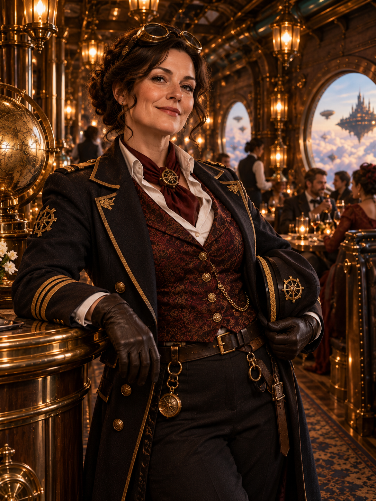
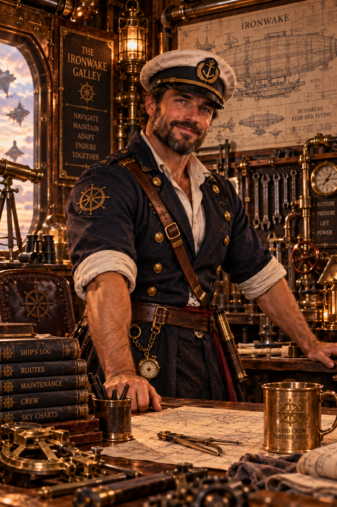
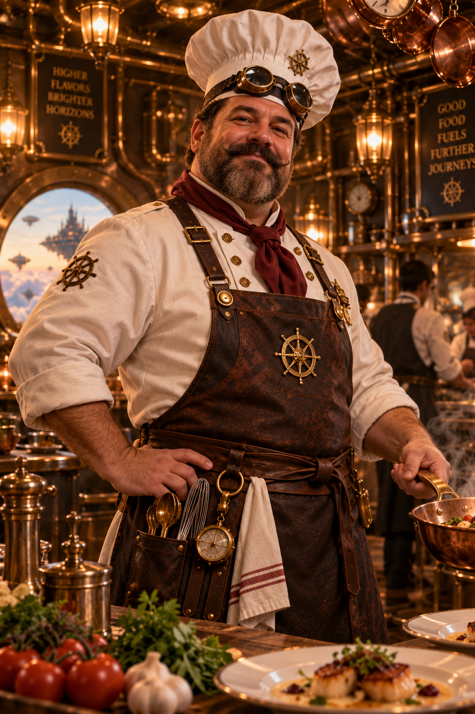
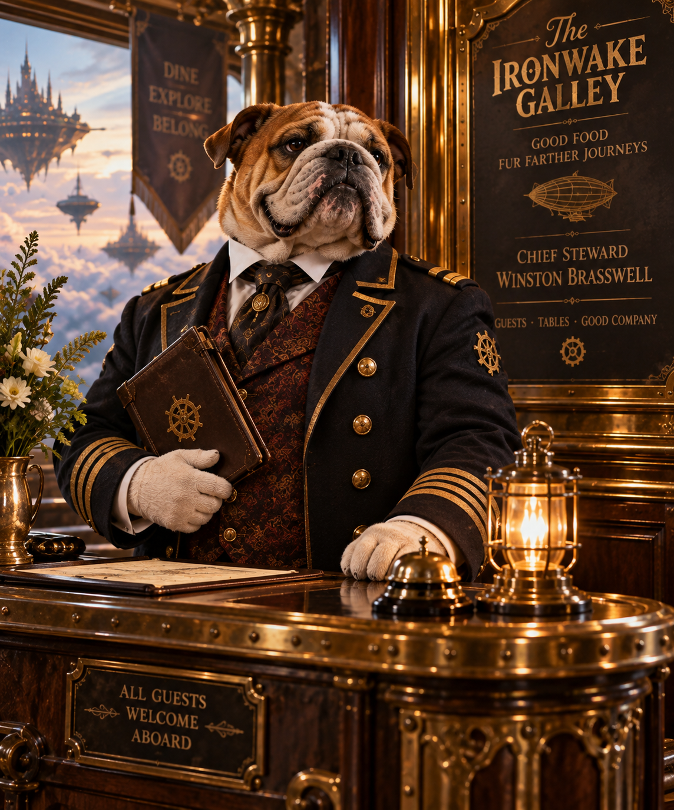

Meet the Crew
Every great airship needs a dependable crew. Ours just happens to serve dinner.

Captain Mabel Wrench
Owner & Captain
After years of hauling cargo across the skies, Captain Mabel retired her airship and gave it a second life as the Ironwake Galley.
She still runs a tight ship, making sure the crew has everything they need and every guest feels welcome aboard.

First Mate Gideon Rivet
Ship Operations & Maintenance
Gideon spent years keeping the Ironwake flying through rough weather and difficult cargo runs.
These days, he maintains the ship's engines, steam systems, and electrical equipment, making sure the galley stays warm and everything runs smoothly.
He insists the ship could still fly if Captain Mabel ever changed her mind.

Chef Barnaby Copperpot
Head Chef
Barnaby believes a good meal can make even the longest voyage worthwhile.
He runs the galley's steam-powered kitchen, preparing hearty dishes with a few creative twists.

Chief Steward Winston Brasswell
Guest Services
Winston keeps the dining room running smoothly.
From managing reservations to helping guests find the perfect table, he makes sure everyone receives a proper welcome.
Our Mission
At the Ironwake Galley, we believe a good meal brings people together. Whether you're a seasoned airship captain or a traveler passing through Brasshaven, there's always a place for you at our table.
Reserve Your Table